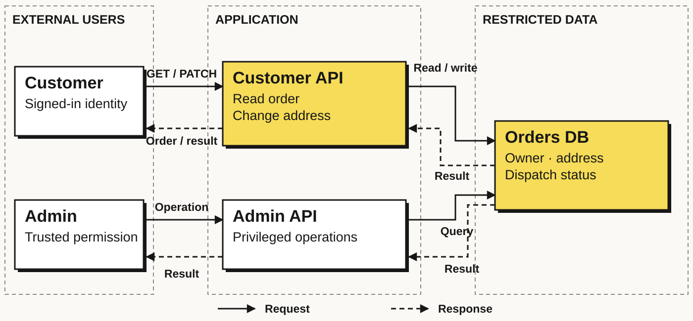

A basic release decision becomes an investigation into attack paths,permissions and controls we can check.

Run python3 -m unittest discover -s tests -v from the repository directory.
python3 -m unittest discover -s tests -v
The examples use fictional orders. The saved model records proposed controls; tests exercise small policy sketches.